1인 창업자를 위한 AI 시대의 오픈소스 생존 전략
이 글은 2026년 7월 23일 「2026 오픈소스 개발자대회」 오리엔테이션(온라인 Zoom, 대회 참가자 대상)에서 유엔진솔루션즈 장진영 대표가 발표한 특별 강연 "단순한 코드 공개를 넘어: 명세 중심 개발과 에이전틱 LLM OS로의 진화 (feat. 유엔진 20년의 해답)"의 슬라이드 내용을 정리한 것입니다. 대회 참여와 연속 수상 스토리, 수상작에서 출발한 오픈소스 기업의 성장기, 그리고 지금 현업이 가장 필요로 하는 AI 기술 트렌드를 다룹니다.
1. 오픈소스는 취미가 아니다 — 대회 수상에서 시작된 23년
유엔진의 이야기는 2003년, 국내 최초로 SourceForge.net에 오픈소스 BPM 커뮤니티를 개설하면서 시작됐습니다. 그 결과물은 대한민국 SW 공모대전 대상으로 이어졌고, 이 수상 이력은 SK텔레콤(T-Interactive), 현대/기아자동차(신차품질관리) 같은 대기업 프로젝트의 문을 여는 열쇠가 되었습니다.
- 🏆 2003–2008: 소스포지넷 최초 개설, 대한민국 SW 공모대전 대상 — SK텔레콤·현대/기아차 도입
- ☁️ 2013–2015: 클라우드 전환, 오픈 클라우드 엔진 의장사 — IBK기업은행 포스트 차세대 BPM 장기 구독
- 🧩 2018–2024: 클라우드 네이티브·마이크로서비스(MSA) 도구 확장 — LG CNS, POSCO DX, 한화생명
- 🤖 2025–2026: Process GPT 및 에이전틱 AI 도약
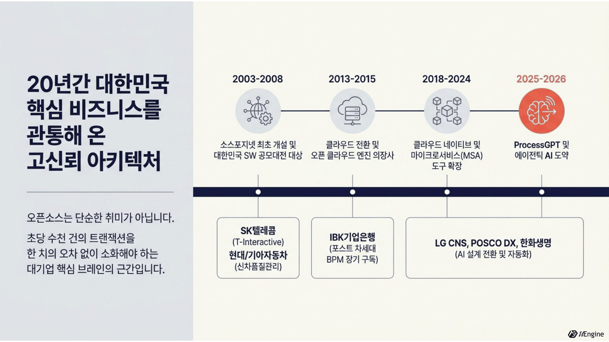
오픈소스는 취미가 아니라, 초당 수천 건의 트랜잭션을 소화하는 대기업 핵심 브레인의 근간이었습니다.
무명의 벤처가 거대 대기업 고객사를 설득하는 유일한 방법은 소스코드를 독점하는 것이 아니라, 고객에게 무한한 통제권과 자유를 부여해 벤더 종속(Lock-in)에 대한 원초적 공포를 불식시키는 것이었습니다. 오픈소스는 신뢰 획득과 '고객 운영 위험의 유료화'를 위한 가장 강력한 유통 채널입니다.
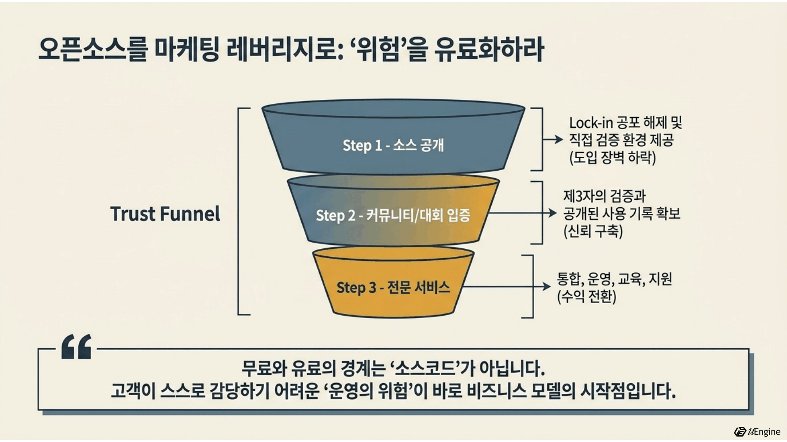
Trust Funnel: 소스 공개(도입 장벽 하락) → 커뮤니티·대회 입증(신뢰 구축) → 전문 서비스(수익 전환). 무료와 유료의 경계는 '소스코드'가 아니라 고객이 감당하기 어려운 '운영의 위험'입니다.
여기서 대회 참가자들에게 전하는 첫 번째 메시지가 나옵니다. 지금 여러분이 만들고 있는 출품작은 단순한 공모전 제출물이 아니라, 제3자의 검증과 공개된 사용 기록을 확보하는 신뢰 퍼널의 두 번째 단계라는 것입니다. 수상 이력은 기업 고객 앞에서 가장 강력한 레퍼런스가 됩니다.
2. AI가 촉발한 오픈소스 2.0 시대
오픈소스 1.0이 코드 중심 — 엔진과 도구를 재사용하고 검증하는 이공계 개발자의 전유물 — 의 시대였다면, 오픈소스 2.0은 명세(Spec)와 지식 중심의 시대입니다. 비즈니스 규칙, 도메인 명세, 조직의 지식을 공동 개발하고 에이전트의 실행 기록(Operating Learning)을 축적하는 방식으로 오픈소스의 무게중심이 이동하고 있습니다.
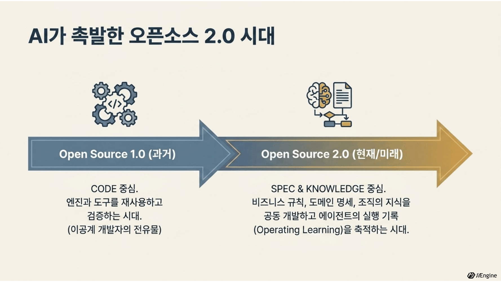
AI가 촉발한 오픈소스 2.0: CODE 중심에서 SPEC & KNOWLEDGE 중심으로.
3. 트렌드 ① 코딩의 종말, '명세(Spec)'의 지배
AI 코딩은 구현의 병목을 없애는 대신 '의도의 병목'을 드러냅니다. 문제 정의, 도메인 개념, 정상/예외 흐름, 역할/권한 — 자연어로 구조화된 도메인 지식이 곧 소스코드의 최상위 계층이 됩니다. Vibe Coding에서 Spec-Driven Development로의 전환입니다.
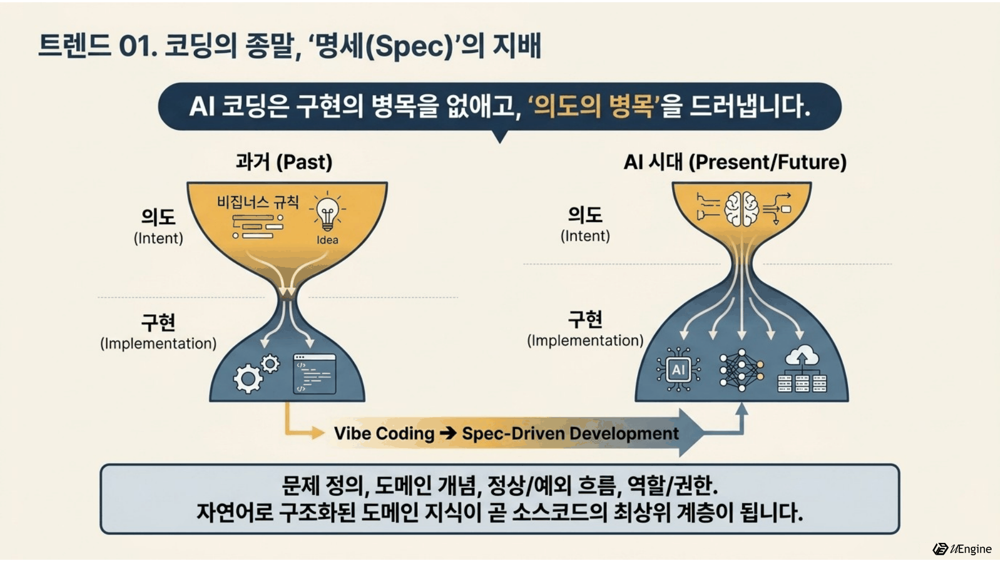
과거에는 의도가 넓고 구현이 좁은 병목이었다면, AI 시대에는 구현이 넓어지고 의도가 병목이 됩니다.
이 전환의 속도는 상상을 초월합니다. 반도체는 2년마다 빨라지지만, AI 코딩 능력은 70일마다 두 배가 됩니다.
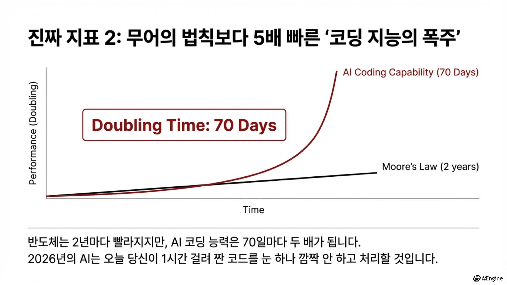
2026년의 AI는 오늘 당신이 1시간 걸려 짠 코드를 눈 하나 깜짝 안 하고 처리합니다.
구현 비용이 0에 수렴하면서 승부처는 '어떻게 짜느냐(How)'에서 '무엇을 짜느냐(What)'로 완전히 이동했습니다. 수십 명의 엔지니어가 수일을 쏟던 기술적 구현이 아니라, "무엇을 만들 것인가"라는 결정이 새로운 병목입니다.
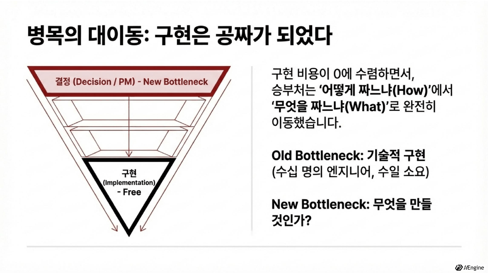
Old Bottleneck: 기술적 구현 → New Bottleneck: 무엇을 만들 것인가?
조직 구조도 함께 무너집니다. PM 한 명에 엔지니어 여덟 명이라는 1:8의 황금 비율은 끝났습니다. AI 덕분에 엔지니어의 속도는 우주선처럼 빨라졌지만 인간의 판단(PM)은 여전히 자전거 속도이기 때문에, 결국 엔지니어와 기획자는 단 한 명의 인간으로 통합됩니다.
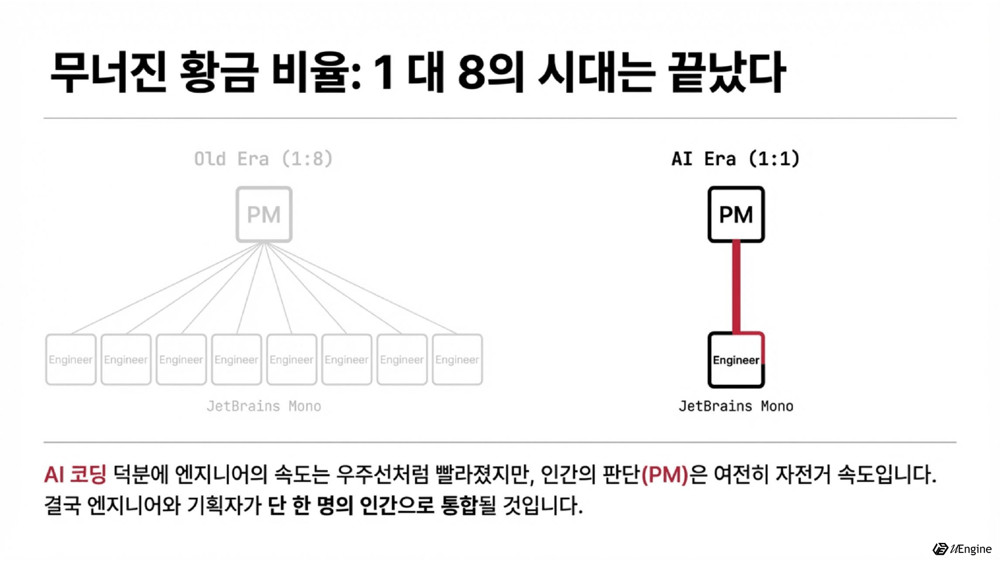
Old Era(1:8)에서 AI Era(1:1)로 — 기획과 구현의 통합.
4. 새로운 생존자: 코더가 아닌 프로덕트 엔지니어
그렇다면 살아남는 개발자는 누구일까요? 코딩 실력, 공감 능력, 기획력의 교집합에 서 있는 프로덕트 엔지니어(Product Engineer)입니다. 과거의 개발자가 스펙을 기다리는 벽돌공(Bricklayer)이었다면, 미래의 개발자는 설계도를 수정하고 재건축하는 현장 소장(Site Manager)입니다.
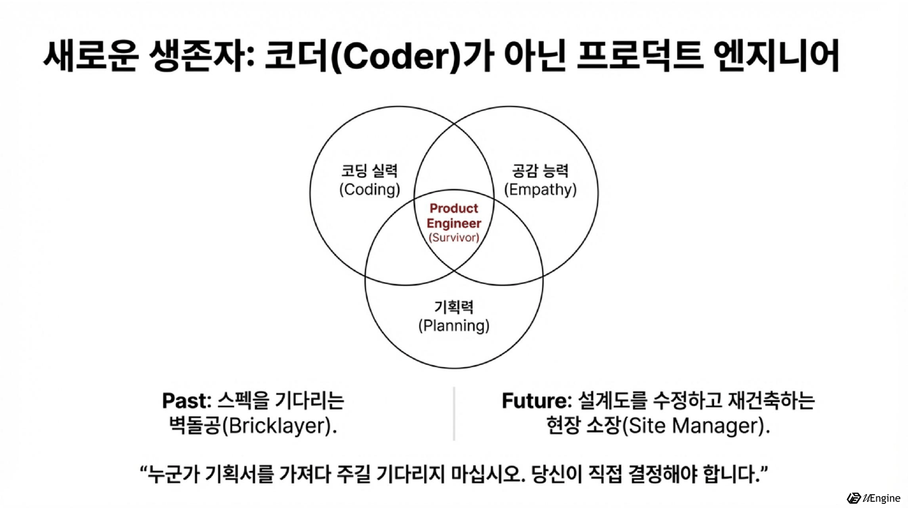
"누군가 기획서를 가져다 주길 기다리지 마십시오. 당신이 직접 결정해야 합니다."
사고의 전환: AI를 팀원처럼 쓰라
"디테일한 생각은 AI가 주도하는 것이고, 나는 그 방향을 제시하는 것입니다." 개발자의 역할은 모든 코드를 직접 작성하는 것에서, AI에게 방향을 지시하고 결과를 검증하며 전략적 결정을 내리는 것으로 이동합니다.
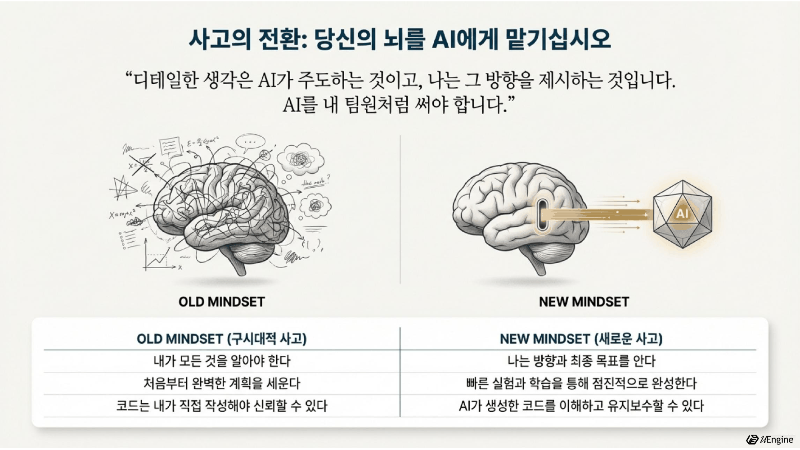
완벽한 계획 대신 빠른 실험과 학습, 직접 작성한 코드에 대한 신뢰 대신 AI 코드를 이해하고 유지보수하는 역량.
실행 리듬도 달라집니다. PRD 생성 → 모델 우선 구현 → UI 없는 테스트 → 피드백과 개선으로 이어지는 30분 고속 이터레이션 사이클이 새로운 개발의 기본 단위입니다. 핵심 인사이트: 첫 사이클의 결과물은 버린다고 생각해야 합니다. 목표는 빠른 실행을 통한 학습과 구체화입니다.
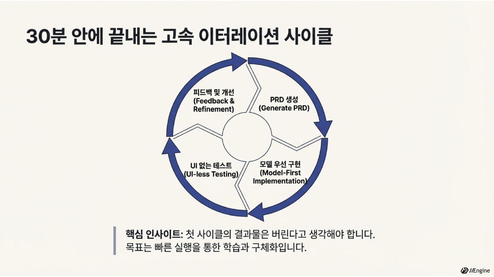
Generate PRD → Model-First Implementation → UI-less Testing → Feedback & Refinement.
아키텍처 역시 비즈니스와 함께 진화해야 합니다. 기술적 완벽함이 아니라 시장 검증이 우선입니다. 초기에는 단일 DB 모놀리식으로 빠르게 MVP를 만들고, 제품이 팔리기 시작하면 이벤트 버스로 결합도를 낮추고, 대규모 트래픽이 증명되었을 때 이벤트 기반 마이크로서비스로 전환합니다.
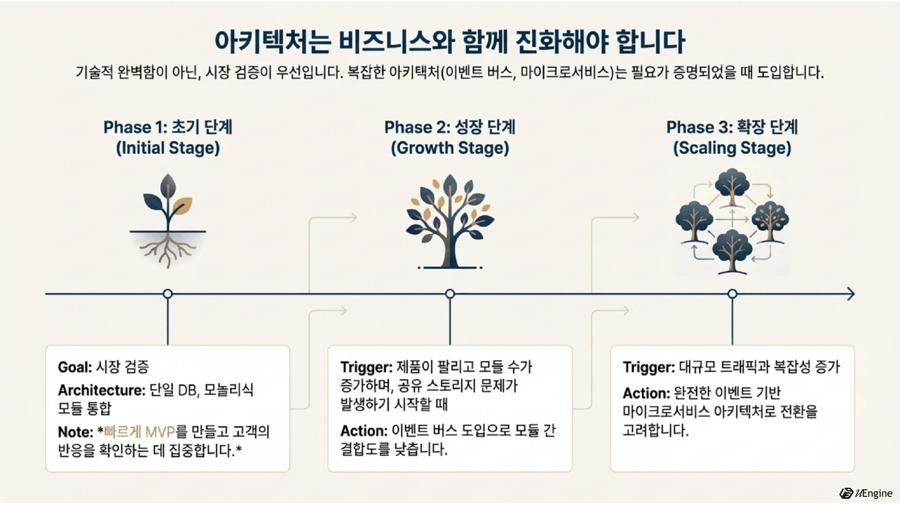
복잡한 아키텍처(이벤트 버스, 마이크로서비스)는 필요가 증명되었을 때 도입합니다.
AI에게 일을 맡기는 방식도 진화해야 합니다. 세세한 단계별 지시(마이크로 프롬프팅)는 AI의 자율성을 잃게 하고 성능을 저하시킵니다. 비즈니스 목적과 의도 중심의 하이 레벨 지시로 1일~4일 치의 거대한 업무 덩어리를 위임하는 것이 AI 네이티브의 방식입니다.
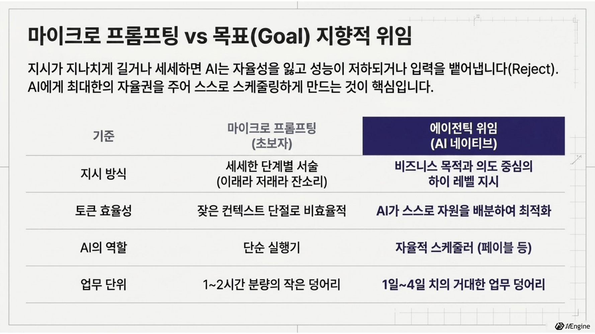
AI에게 최대한의 자율권을 주어 스스로 스케줄링하게 만드는 것이 핵심입니다.
5. 1인 창업가를 위한 AI 시대 3대 생존 수칙
- 📢 마케팅 레버리지: '코드를 제품으로 착각하지 마라.' 오픈소스를 신뢰 획득과 '고객 운영 위험 유료화'를 위한 강력한 유통 채널로 활용하라.
- 📐 명세의 자산화: '코드 노동에서 벗어나라.' 코딩 기술이 아닌, 고객의 반복되는 문제를 구조화된 도메인 명세(Spec)와 평가셋으로 장악하는 아키텍트가 되라.
- ⚙️ 프로세스의 지배: '가벼운 챗봇을 버려라.' 파편화된 AI 데모가 아니라, 좁더라도 시작부터 끝까지 완결되는 E2E 가치사슬(Value Chain)을 통제하라.
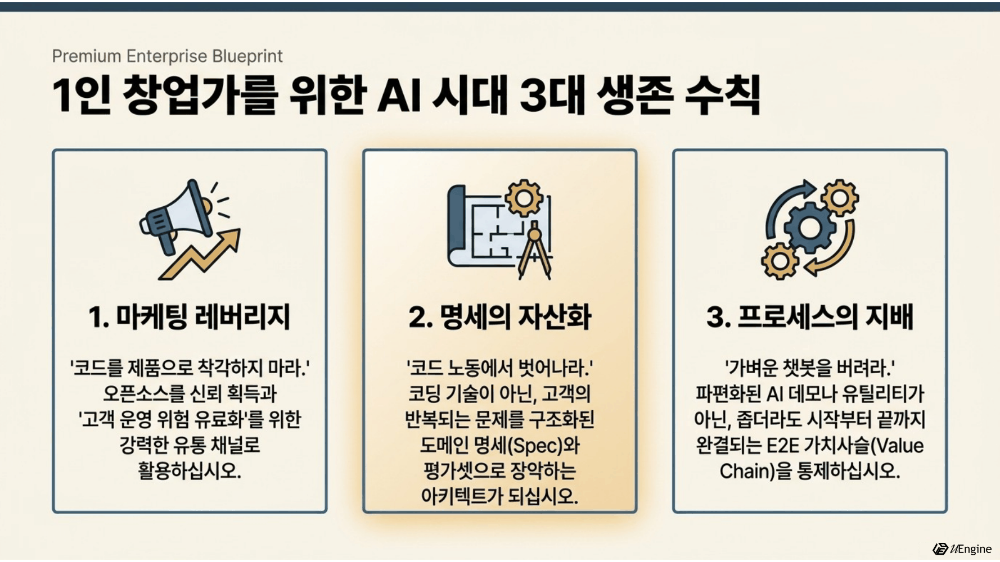
발표의 뼈대가 된 3대 생존 수칙.
6. 트렌드 ② 개인 비서(Co-pilot)에서 E2E 프로세스 AI로
요약·메일·검색 같은 개인 과업을 돕는 코파일럿을 아무리 배포해도 기업의 E2E 성과는 자동으로 창출되지 않습니다. 대화창 고립, 부서 간 맥락 단절, 프로세스 KPI 부재가 기업 ROI 실패의 원인입니다. 기업의 성과는 사람, 에이전트, 시스템의 인계와 협업 — 즉 가치사슬의 완결에서 나옵니다.
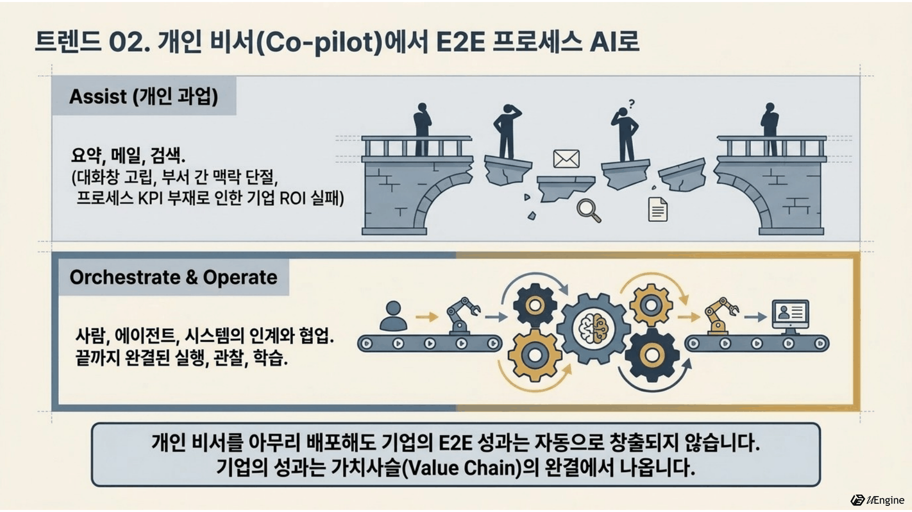
Assist(개인 과업)에서 Orchestrate & Operate(끝까지 완결된 실행·관찰·학습)로.
유엔진의 Process GPT는 파편화된 AI를 비즈니스 실행 엔진으로 통합합니다. 자연어로 설계하면 BPMN/DMN 표준 모델로 변환되고, A2A 프로토콜로 AI 에이전트가 자동 배치되며, 사람의 개입과 승인(Human-in-the-Loop)을 거쳐 MCP 프로토콜로 시스템이 실행·모니터링됩니다. Process GPT에서 BPMN은 에이전트의 자율성과 기업 통제력을 조율하는 완벽한 '운영 계약(Operating Contract)'입니다.
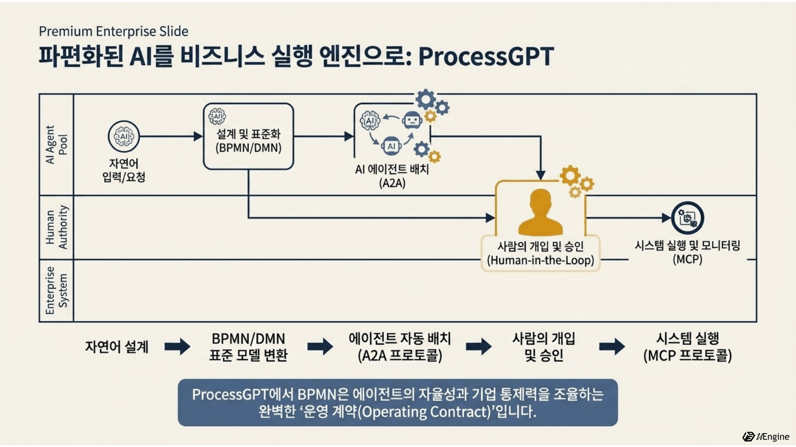
자연어 설계 → BPMN/DMN 변환 → 에이전트 자동 배치(A2A) → 사람의 개입·승인 → 시스템 실행(MCP).
7. 유엔진 20년의 해답 — BPM에서 에이전틱 AI까지
기술의 이름은 바뀌었어도 유엔진의 23년간 방향은 단 하나였습니다. "비즈니스가 말한 의도를 더 직접적으로 실행하는 것." 업무 흐름을 코드 밖으로 꺼낸 BPM(2003~), 도메인 언어로 합의하고 경계를 나눈 DDD/MSA(2018~), 그리고 에이전트가 지식과 사양을 바탕으로 자연어를 직접 실행하는 Agentic AI(2025~)로 이어지는 계단입니다.
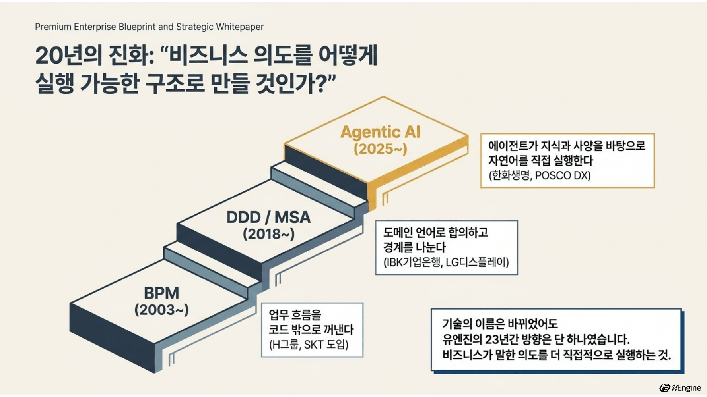
"비즈니스 의도를 어떻게 실행 가능한 구조로 만들 것인가?" — 23년간 단 하나의 질문.
명세 중심 개발의 완성이 Robo Architect입니다. 시중 LCNC(로우코드/노코드)가 내부 종속 런타임 스크립트를 생성해 벤더 종속이 매우 높은 반면, Robo Architect는 Java, Python 등 순수 표준 범용 코드를 생성해 자유로운 수정이 가능하고, DDD 및 Aggregate 단위에 부합하는 대규모 Cloud Native / MSA 아키텍처를 지원합니다.
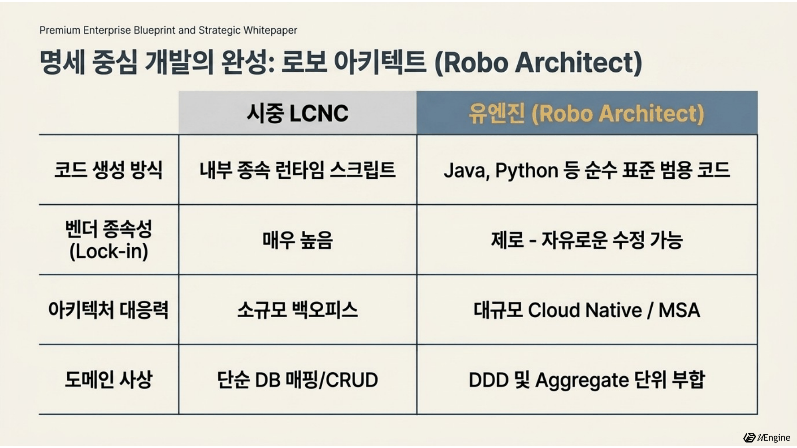
명세 중심 개발의 완성: 로보 아키텍트(Robo Architect).
8. 자율화 청사진 — 밤새 일하는 에이전트와 AI 네이티브의 경제학
기존에는 3~4일이 소요되던 개발, QA, 마케팅 에셋 생성, 배포 작업이 하나의 응집된(Cohesive) 워크플로우로 통합되어 밤새 자율적으로 실행됩니다. 팀장은 오후 5시에 'Goal'을 위임하고, 다음 날 아침 결과를 검토합니다. 소스 코드 입력부터 아키텍처·매뉴얼 도출, 설치 밸리데이션, E2E 회귀 테스트, 데모 영상 생성, 웹사이트 배포, 에이전트 스킬 생성까지 — 전 과정이 AI 에이전트의 몫입니다.
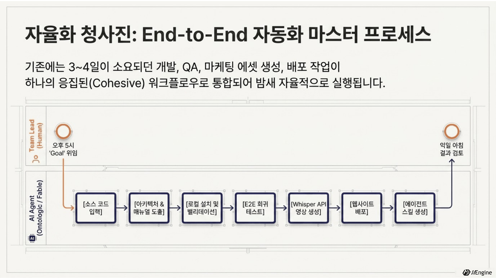
사람은 목표를 위임하고 결과를 검토합니다. 실행은 에이전트가 밤새 완결합니다.
이것은 기술적 흥미가 아니라 경제학의 문제입니다. AI 도구를 적극 도입한 기업들은 수십 명의 인원으로 유니콘 기업급의 가치를 창출하고 있습니다. 텔레그램은 직원 30명으로 1인당 약 483억 원, 미드저니는 40명으로 약 181억 원의 가치를 만들어냅니다.
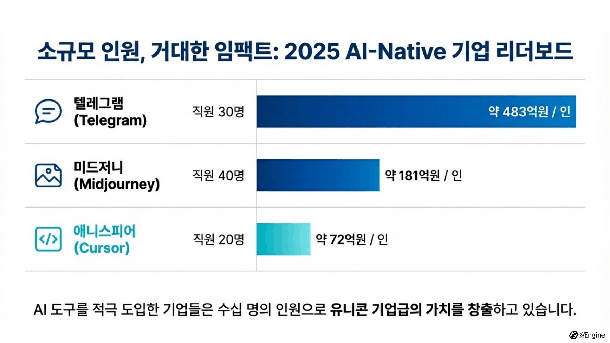
소규모 인원, 거대한 임팩트: 2025 AI-Native 기업 리더보드.
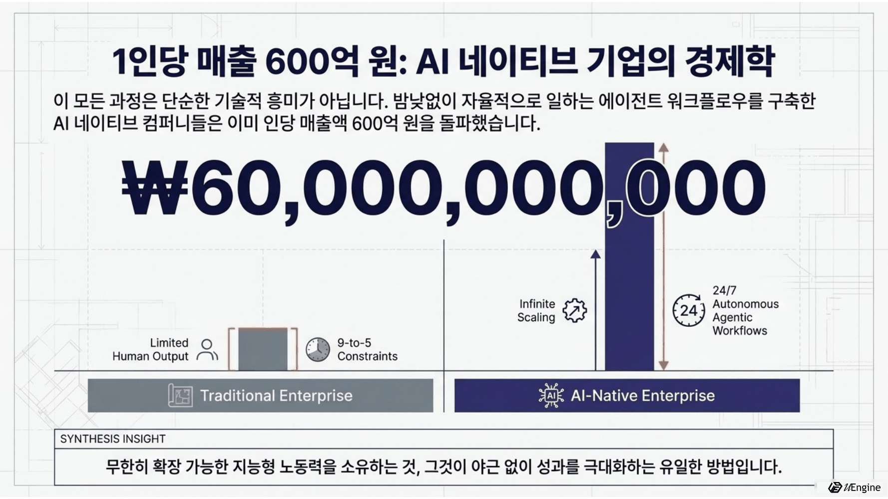
밤낮없이 자율적으로 일하는 에이전트 워크플로우를 구축한 AI 네이티브 컴퍼니들은 이미 인당 매출액 600억 원을 돌파했습니다.
9. AI 시대 개발자 선언문
- 🪄 우리는 코더가 아닌 지휘자다. 우리는 AI를 지휘하여 가치를 창출한다.
- ⏱️ 완벽함보다 속도다. 30분 사이클로 빠르게 실행하고 학습한다.
- 💎 모델이 항상 먼저다. UI보다 핵심 로직을 우선 검증한다.
- ⚙️ 통합은 자동화한다. 반복적인 통합 작업은 AI에게 맡긴다.
- 🔀 아키텍처는 진화한다. 비즈니스 성장에 맞춰 시스템을 발전시킨다.
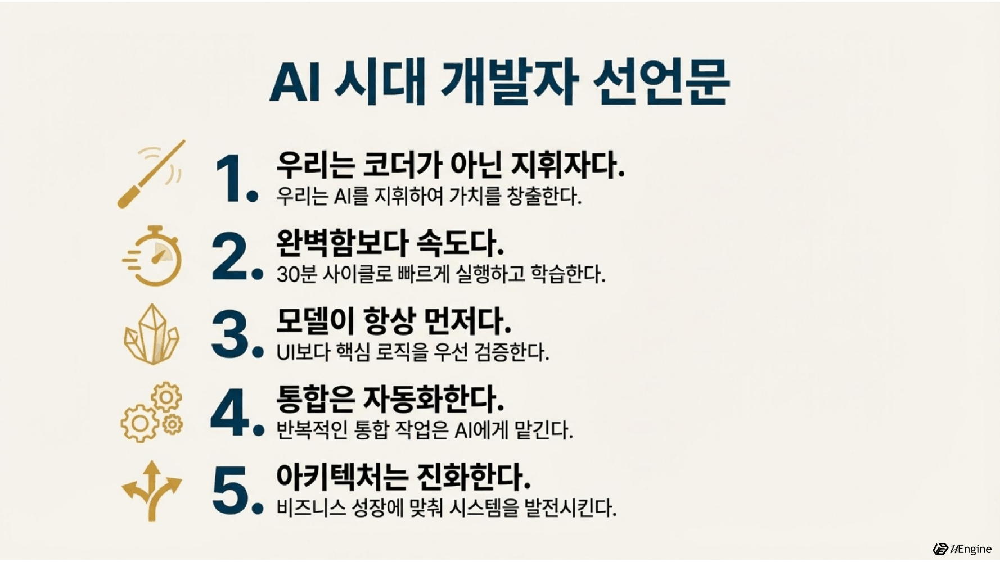
대회 참가자들과 함께 나눈 AI 시대 개발자 선언문.
오픈소스 개발자대회에 도전하는 여러분의 출품작이 20년 뒤 어떤 기업의 핵심 브레인이 되어 있을지 모릅니다. 유엔진이 2003년 공모대전 대상에서 시작해 오늘의 에이전틱 AI 플랫폼까지 왔던 것처럼 말입니다. 코드를 넘어 명세를, 데모를 넘어 프로세스를 장악하는 개발자가 되시길 응원합니다.
발표에 사용된 전체 슬라이드는 아래에서 내려받을 수 있으며, 발표에서 소개한 제품 여정은 Process GPT, Robo Architect, Ontologic Platform 소개 페이지에서 이어집니다.